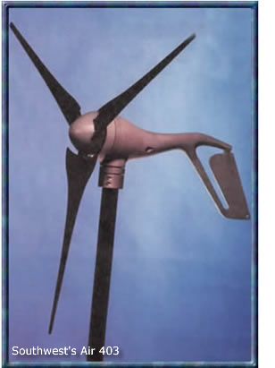
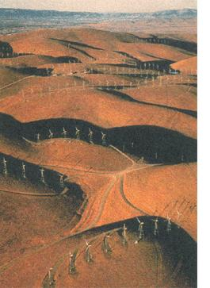

ENERGY &ENVIRONMENT
At last! Low-cost wind power hits market.
when the sun doesn't shine, the cooler temperatures help to create a breeze that can be put to work turning a wind turbine.
You're probably aware of the huge wind farms that provide supplemental power to Los Angeles and power entire cities in other countries. I'm excited about the potential for large-scale wind power plants for cities, and in my community I have already begun to see the potential of wind power for the small system do-it-yourselfer.
After apprenticing as an electrician and studying at the Carbondale, Colorado-based Solar Energy International-a nonprofit organization that provides renewable energies education and technical assistance-I started Amazon Power in 1993 and began installing solar in the area. As my clients took an interest in wind, I began installing wind generators to supplement many solar systems.
These generators are often the most sensible way to boost the capacity of an existing photovoltaic (PV) system. A strong wind resource can allow you to have a smaller battery bank for storage. If you're interested in exploring the possibility of adding a small wind turbine to your system, read on for some tips I've gained from working with small units manufactured to provide power to independent homes, small schools and clinics, as well as for pumping water.
Evaluating Wind Potential
-----------------
First, assess your location for its wind power potential. You can purchase metering devices and obtain average wind speed data from the airport closest to your home. This information is normally collected at 30 feet above ground level, which is about the minimum height to set a wind generator, as wind speeds are somewhat slower and are subject to more obstructions closer to the ground. Inversely, the higher above the ground, the more significant the wind speed.
For a small supplemental generator that can cost as little as $1,000, including the tower and installation, a visual assessment of available wind power can he sufficient. Raise a light flag, and make it a habit to observe trees and shrubbery around your site. If they are perpetually bent, it's a good indication of a persistent wind. At 4 to 7 mph, you can feel the wind on your face and leaves will rustle. At 8 to 12 mph, leaves will be in constant motion and the flag will raise in the wind. Wind speeds of 13 to 18 mph raise dust and move small branches, and at 19 to 24 mph, trees in leaf begin to sway. At 25 mph, large branches begin to move, and you've got great wind-generating potential!
Small generators can be mounted on a pole with guy wires. (I don't recommend mounting a wind generator on your roof, regardless of what some manufacturers might suggest. Even with a small generator, noise from vibration is a problem.) Put the generator on a tilt up pole tower to make it easier to install and maintain This allows you to mount the generator and connect the wires on die ground before raising the tower-no climbing needed! Keep voltage lass down to 2% by using large enough wire. Manufacturers will provide charts to help determine the proper wire size for your installation.
Evaluating Wind Generators
-----------------
‹Wind generators, Altamount Pass, California
‹ Photos: SCHAFER & HILL/PETER ARNOLD, INC.
About a year ago, I installed an Air 303, made by Southwest Windpower, for supplemental charging in a 24-volt home/ recording studio system. The system consisted of 12 Solec 50-watt solar modules. 18 Exide 6-volt golf cart batteries, a Trace 4024 sinewave inverter and a Trace C-30 charge controller, with fuses and disconnects for safety. The loads in thus system are a Vestfrost refrigerator/freezer a small water pump, efficient lighting and a recording studio. The PV system could have provided ample power for these loads. but the users were unaccustomed to living with a renewable energy system and neglected to turn off loads when they weren't using them. After a couple of years of operating under a perpetually low- state of charge, the hatter. bank was suffering
Several home owners in the arc.: had already added an Air 303 to their PV systems. This hit the market in '95 am quickly became popular. It was inexpensive, sell regulating and maintenance free. My client decided this the best solution to supplemental charging of her batteries.
Since this installation, the Air 303 has been supplanted by an upgraded model, the Air 403, because there were some problems with regulation. This new, improved model boasts the same benefits as the 303, but in a more reliable and sturdier machine. It gives the batteries a trickle charge at as little as 15 mph of wind. It maxes out at about 35 mph, putting 600 watts of charge into the battery bank With an average wind speed of 25 mph. which is common at this location, it would require the addition of 15 to 20 more Solec nodules to equal the energy output of this machine. With a price tag of about $300 per solar module. and about $600 on the Air 403 Coot in pole and installation), it's easy to see why the addition of a small wind generator can he a very attractive option for someone living with a good wind resource.
I mounted doe Air 303 on a freestanding pole buried in cement. If I had to do it over again today, I would put guy wires on it, but there have been no problems and the client is satisfied (it is only on a 20foot pole). I installed a switch at rite bottom of the pole to stop rotation in the event maintenance is required, and then ran the wires into a disconnect switch. With the self-regulation, the charge went right into the batteries from there. The battery bank was topped off within a couple of days and there has been a state of undercharge since.
There's a lot about the Air 303, and its successor, the Air 403, that make them attractive for the homeowner who has modest power requirements and a site with some wind resource available. I like the lightweight, easy installation and self regulating features, not to mention the fact that they are virtually maintenance free. Keep in mind that the smaller the unit is, the faster it has to turn to put out the same amount of power as a larger one. This can lead to overheating and premature wear, as was a problem with the Air 303. It appears that Southwest Windpower has made several changes in the Air 403 that should make it a more reliable machine-only time will tell. The folks I know who have added this machine to their systems have been pleased with the results. There are several models by different manufacturers that are slightly larger and not much more expensive. Many of them have a stronger track record after years of operation and are worth investigating.
Final Thoughts
-----------------
Keep in mind that anything that is up in the air and moving at high speeds can be dangerous. Even the machines that are supposedly maintenance free deserve a visual inspection at least once a year to make sure nothing is rattling loose.
Some concerns my clients have had about adding a wind system include noise and aesthetics. As for noise, I've worked with several owners of generators from the small Air 303 to a Jacob, 3,000-watt generator on a 60-foot tower. The only time noise has been an issue is when the generator was mounted on a building.
Admittedly, some people don't like the looks of renewable energy systems. I think they're attractive and show something about the character of the person who will take power into his or her own hands. I'm amazed at how often I'm asked to hide a system. Be proud! By accepting the idea that a battery is like a bucket, and renewable energy systems the sources that can fill it, you will become exponentially more aware of your potential to minimize your impact on the planet.
|
 |
|
 |